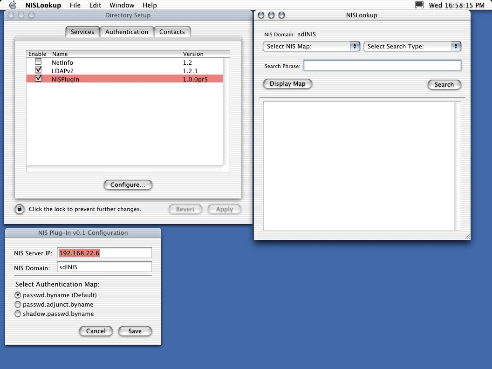
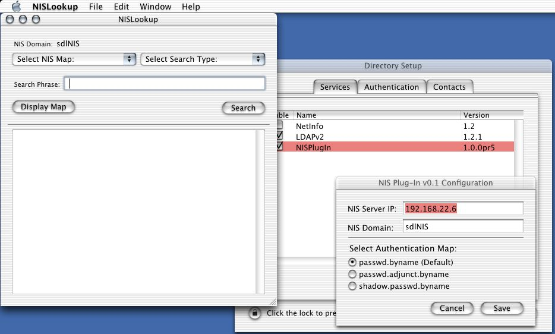

NIS plug-in for MacOS X Directory Services:
This is a plug-in for MacOS X Directory Services to provide NIS client functionality. Following the protocols established by Sun Microsystems for the most recent version of NIS (v2.0), the plug-in will perform NIS map lookup operations and translate requested information into a form usable by Directory Services. All configuration and management of the NIS interface is handled by the plug in, without the need for user intervention at the system command line. Completing the plug-in software package is a GUI utility to facilitate NIS map queries. The implementation of the plug-in package follows the most recent paradigms specified by both the MacOS X developer documentation and the open-source NetInfo directory system component of MacOS X.

